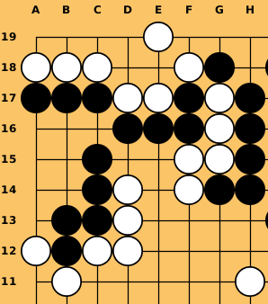

## Hello World!
For this first blog entry, well discuss a 0.5 kome game I played agained 2k `nakade11`
Here, exactly 100 moves in, the game looks favorable to Black except there for some questions about the
life or death status on the upper left. The upper right being quite clear.
The bottom half is just begginning to be filled, with a crosscut at **K4**
## Solve it!
The best source of Go problems is from the game itself.
I spent the entire game thinking about the upper left and whether it as alive.
**Is Black dead?**

As you are reading the rest of the blog this is something to play with.
Until I write a decent online Go board, you will have to use the real thing.